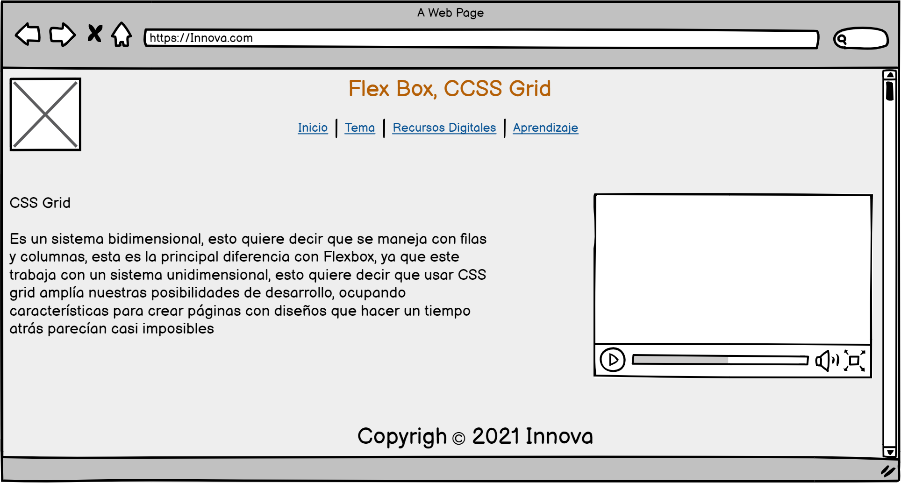

Sitio Web Para el aprendizaje de Flex Box y CCSS Grid
El proposito de esta actividad es apropiar las tematicas presentadas en la fase 2, donde se
inicia
el diseño y la construcción del sitio web.

El proposito de esta actividad es apropiar las tematicas presentadas en la fase 2, donde se
inicia
el diseño y la construcción del sitio web.
Es el tipo de display en css que permite un manejo flexible de la alineación, dimensionamiento y distribución de elementos html.
Esta propiedad se aplica al elemento padre, pero va a afectar principalmente a sus elementos
hijos directos,
alineándolos uno tras de otro.
Los elementos hijos de un padre con propiedad display: flex tienen a su disposición algunas
nuevas propiedades
que aportan mayor flexibilidad a su comportamiento, como por ejemplo:
-flex-shrink y flex-wrap del padre: Permite adaptar y distribuir los elementos de manera
dinámica en el espacio
horizontal disponible hasta ocupar todo el espacio, y luego pasar a ocupar dinamicamente las
siguiente filas hacia abajo.
Es un sistema bidimensional, esto quiere decir que se maneja con filas y columnas, esta es la
principal
diferencia con Flexbox, ya que este trabaja con un sistema unidimensional, esto quiere decir que
usar CSS
grid amplía nuestras posibilidades de desarrollo, ocupando características para crear páginas
con diseños
que hacer un tiempo atrás parecían casi imposibles
